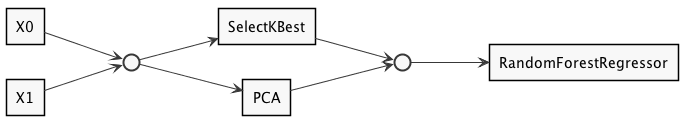
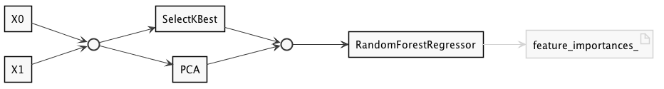
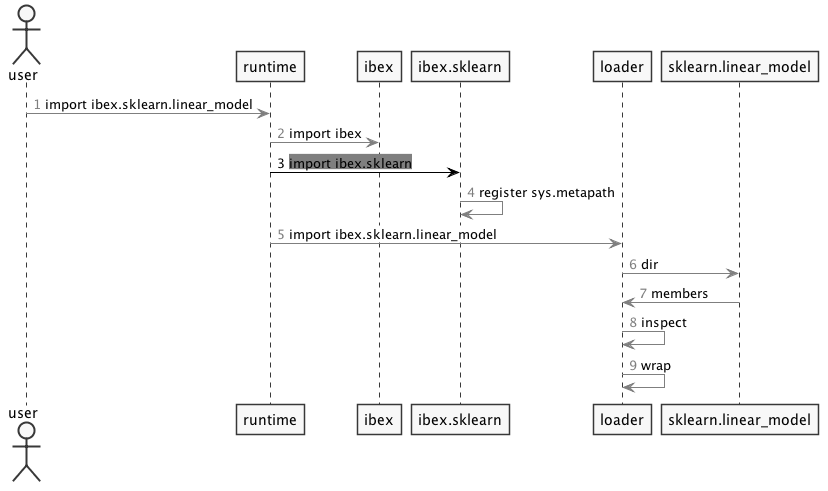
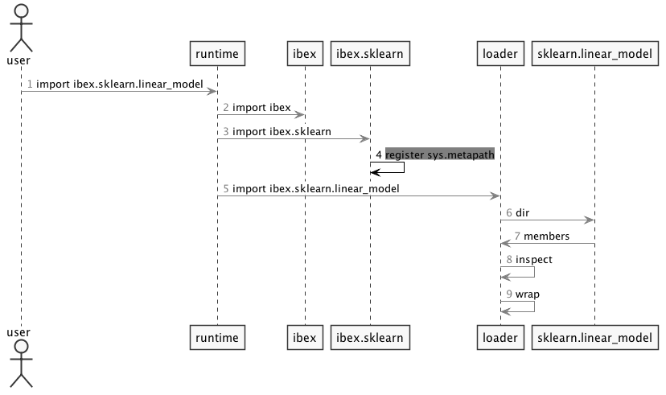
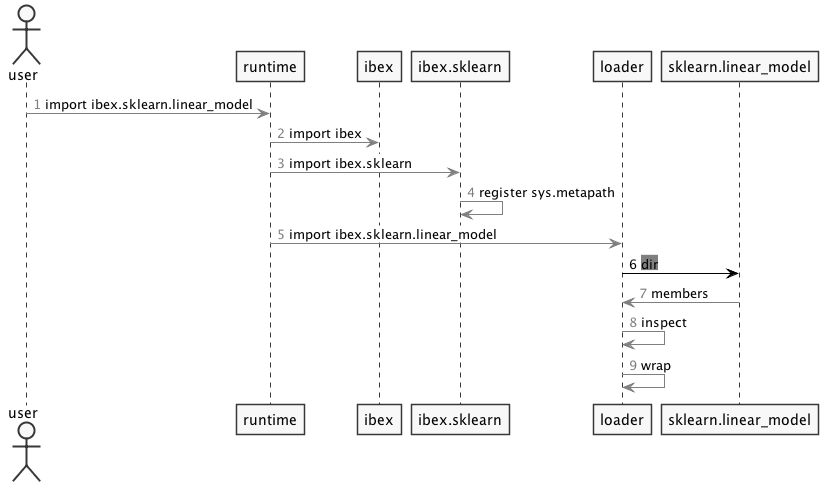
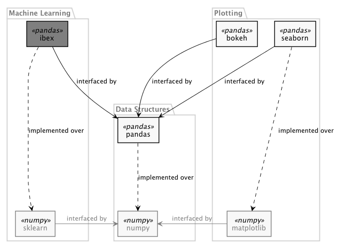

Ibex
Making Scikit-Learn Run On Top Of Pandas
Ami Tavory, Shahar Azulay, Tali Raveh-Sadka
Outline
- Motivation
- Examples
- Main Points
- Interface
- Implementation
- Conclusions
Example 1: Concatenate & Manipulate Columns
http://scikit-learn.org/stable/auto_examples/plot_feature_stacker.html

X = np.c_[X0, X1]
features = make_union(SelectKBest(k=1), PCA(n_components=2))
prd = make_pipeline(
features,
RandomForestRegressor())
prd.fit(X, y)
X = np.c_[X0, X1]
features = make_union(SelectKBest(k=1), PCA(n_components=2))
prd = make_pipeline(
features,
RandomForestRegressor())
prd.fit(X, y)
X = np.c_[X0, X1]
features = make_union(SelectKBest(k=1), PCA(n_components=2))
prd = make_pipeline(
features,
RandomForestRegressor())
prd.fit(X, y)
X = np.c_[X0, X1]
features = make_union(SelectKBest(k=1), PCA(n_components=2))
prd = make_pipeline(
features,
RandomForestRegressor())
prd.fit(X, y)
>>> X0
array([[23.2, 21.8], ..., ..., ..., ])
>>> X1
array([[9, 8, 78], ..., ..., ..., ])
>>> X
array([[21.8, 0.3, 9.8], ..., ..., ..., ])
>>> prd.feature_importances_
array([0.1, 0.3, 0.7])
Results Interpretability

>>> prd.feature_importances_
array([0.1, 0.3, 0.7])
- What do these numbers mean?
- Which original column does the first number represent?
Column Maintenance
Possible Train Scenario
Possible Deployment Scenario
Example 2: Latent Factor Features
| User | Movie | Rating |
|---|---|---|
| Roni | Frozen | 5 |
| Roni | Mulan | 4 |
| Yarden | Mulan | 1 |
| Anat | Mulan | 1 |
| Anat | Shrek | 2 |
| Yarden | Shrek | 3 |
| Yarden | Frozen | 5 |
| Anat | Frozen | 5 |
| Roni | Shrek | 5 |

Original
| User | Movie | Rating |
|---|---|---|
| Roni | Frozen | 5 |
| Roni | Mulan | 4 |
| Yarden | Mulan | 1 |
| Anat | Mulan | 1 |
| Anat | Shrek | 2 |
| Yarden | Shrek | 3 |
| Yarden | Frozen | 5 |
| Anat | Frozen | 5 |
| Roni | Shrek | 5 |
Pivot
| Frozen | Shrek | Mulan | |
|---|---|---|---|
| Roni | 5 | 5 | 4 |
| Yarden | 5 | 3 | 1 |
| Anat | 5 | 2 | 1 |
NMF Decomposition
| User | user_0 | user_1 |
|---|---|---|
| Roni | 0.1 | 1.3 |
| Yarden | 1.1 | 1.4 |
| Anat | 0.2 | 9.8 |
| Movie | movie_0 | movie_1 |
|---|---|---|
| Frozen | 10 | 20 |
| Shrek | 20.1 | 30.4 |
| Mulan | 12 | 13 |
Merge With Long Format
| User | Movie | user_0 | user_1 | movie_0 | movie_1 |
|---|---|---|---|---|---|
| Roni | Frozen | 0.1 | 1.3 | 10 | 20 |
| Roni | Mulan | 0.1 | 1.3 | 12 | 13 |
| Yarden | Mulan | 1.1 | 1.4 | 12 | 13 |
| Anat | Mulan | 0.2 | 9.8 | 12 | 13 |
| Anat | Shrek | 0.2 | 9.8 | 20.1 | 30.4 |
| Yarden | Shrek | 1.1 | 1.4 | 20.1 | 30.4 |
| Yarden | Frozen | 1.1 | 1.4 | 10 | 20 |
| Anat | Frozen | 0.2 | 9.8 | 10 | 20 |
| Roni | Shrek | 0.1 | 1.3 | 20.1 | 30.4 |
Performing The Munging
- How to actually perform the pivots + merge?
- Is this really data?
User Movie Rating Roni Frozen 5 Roni Mulan 4 Yarden Mulan 1 Anat Mulan 1 Anat Shrek 2 Yarden Shrek 3 Yarden Frozen 5 Anat Frozen 5 Roni Shrek 5
Example 3: Combination Verbosity
pipeline = Pipeline([
# Extract the subject & body
('subjectbody', SubjectBodyExtractor()),
# Use FeatureUnion to combine the features from subject and body
('union', FeatureUnion(
transformer_list=[
# Pipeline for pulling features from the post's subject line
('subject', Pipeline([
('selector', ItemSelector(key='subject')),
('tfidf', TfidfVectorizer(min_df=50)),
])),
# Pipeline for standard bag-of-words model for body
('body_bow', Pipeline([
('selector', ItemSelector(key='body')),
('tfidf', TfidfVectorizer()),
('best', TruncatedSVD(n_components=50)),
])),
# Pipeline for pulling ad hoc features from post's body
('body_stats', Pipeline([
('selector', ItemSelector(key='body')),
('stats', TextStats()), # returns a list of dicts
('vect', DictVectorizer()), # list of dicts -> feature matrix
])),
],
# weight components in FeatureUnion
transformer_weights={
'subject': 0.8,
'body_bow': 0.5,
'body_stats': 1.0,
},
)),
# Use a SVC classifier on the combined features
('svc', SVC(kernel='linear')),
])
Outline
- Motivation
- Examples
- Main Points
- Interface
- Implementation
- Conclusions
1. Use Metadata
Numpy
| 5.1 | 3.5 | 1.4 | 0.2 |
| 4.9 | 3.0 | 1.4 | 0.2 |
| 4.7 | 3.2 | 1.3 | 0.2 |
| 4.6 | 3.1 | 1.5 | 0.2 |
| 5.0 | 3.6 | 1.4 | 0.2 |
Pandas
| sepal length (cm) | sepal width (cm) | petal length (cm) | petal width (cm) | |
|---|---|---|---|---|
| 0 | 5.1 | 3.5 | 1.4 | 0.2 |
| 1 | 4.9 | 3.0 | 1.4 | 0.2 |
| 2 | 4.7 | 3.2 | 1.3 | 0.2 |
| 3 | 4.6 | 3.1 | 1.5 | 0.2 |
| 4 | 5.0 | 3.6 | 1.4 | 0.2 |
2. Utilize Shell-Like Operators
We intuitively know what this means
$ ls | wc
Outline
- Motivation
-
Interface
-
Implementation
- Conclusions
Layers
Mixin + Adapter

Wrapping
from ibex import frame
PdLinearRegression = frame(sklearn.linear_model.LinearRegression)

Indexing
import pandas as pd
X = pd.DataFrame({'a': [0, 2, 3], 'b': [1, 4, 6]})
y = pd.Series([10, 20 , 30])
| a | b | |
|---|---|---|
| 0 | 0 | 1 |
| 1 | 2 | 4 |
| 2 | 3 | 6 |
| 0 | 10 |
|---|---|
| 1 | 20 |
| 2 | 30 |
>>> PdLinearRegression().fit(X, y).predict(X)
| 0 | 10 |
|---|---|
| 1 | 20 |
| 2 | 30 |
X = pd.DataFrame({'a': [0, 2, 3], 'b': [1, 4, 6]})
y = pd.Series([10, 20 , 30])
| a | b | |
|---|---|---|
| 0 | 0 | 1 |
| 1 | 2 | 4 |
| 2 | 3 | 6 |
| 0 | 10 |
|---|---|
| 1 | 20 |
| 2 | 30 |
| b | a | |
|---|---|---|
| 0 | 1 | 0 |
| 1 | 4 | 2 |
| 2 | 6 | 3 |
>>> PdLinearRegression().fit(X, y).predict(X[['b', 'a']])
| 0 | 10 |
|---|---|
| 1 | 20 |
| 2 | 30 |
X = pd.DataFrame({'a': [0, 2, 3], 'b': [1, 4, 6]})
y = pd.Series([10, 20 , 30])
X1 = pd.DataFrame({'a': [0, 2, 3], 'b': [1, 4, 6]}, index=['i', 'j', 'k'])
| a | b | |
|---|---|---|
| 0 | 0 | 1 |
| 1 | 2 | 4 |
| 2 | 3 | 6 |
| 0 | 10 |
|---|---|
| 1 | 20 |
| 2 | 30 |
| a | b | |
|---|---|---|
| i | 0 | 1 |
| j | 2 | 4 |
| k | 3 | 6 |
>>> PdLinearRegression().fit(X, y).predict(X[['b', 'a']])
| i | 10 |
|---|---|
| j | 20 |
| k | 30 |
X = pd.DataFrame({'a': [0, 2, 3], 'b': [1, 4, 6]}, index=['i', 'j', 'k'])
y = pd.Series([10, 20 , 30], index=[21, 22, 23])
| a | b | |
|---|---|---|
| i | 0 | 1 |
| j | 2 | 4 |
| k | 3 | 6 |
| 21 | 10 |
|---|---|
| 22 | 20 |
| 23 | 30 |
>>> PdLinearRegression().fit(X, y).predict(X)
---------------------------------------------------------------------------
ValueError Traceback (most recent call last)
----> 1 LinearRegression().fit(X, y)
...
--> 113 **kwargs)
...
ValueError: Indexes do not match
X = pd.DataFrame({'a': [0, 2, 3], 'b': [1, 4, 6]}, index=['i', 'j', 'k'])
y = pd.Series([10, 20 , 30], index=[21, 22, 23])
| a | b | |
|---|---|---|
| i | 0 | 1 |
| j | 2 | 4 |
| k | 3 | 6 |
| 21 | 10 |
|---|---|
| 22 | 20 |
| 23 | 30 |
>>> PdLinearRegression().fit(X, y).predict(X)
---------------------------------------------------------------------------
ValueError Traceback (most recent call last)
----> 1 LinearRegression().fit(X, y)
...
--> 113 **kwargs)
...
ValueError: Indexes do not match
X = pd.DataFrame({'a': [0, 2, 3], 'b': [1, 4, 6]})
y = pd.Series([10, 20 , 30])
X1 = pd.DataFrame({'m': [0, 2, 3], 'n': [1, 4, 6]})
| a | b | |
|---|---|---|
| 0 | 0 | 1 |
| 1 | 2 | 4 |
| 2 | 3 | 6 |
| 0 | 10 |
|---|---|
| 1 | 20 |
| 2 | 30 |
| m | n | |
|---|---|---|
| 0 | 0 | 1 |
| 1 | 2 | 4 |
| 2 | 3 | 6 |
>>> PdLinearRegression().fit(X, y).predict(X1)
---------------------------------------------------------------------------
KeyError Traceback (most recent call last)
----> 1 LinearRegression().fit(X, y).predict(X1)
...
-> 1231 raise KeyError('%s not in index' % objarr[mask])
...
KeyError: "Index(['a', 'b'], dtype='object') not in index"
Combining Estimators
-
Optional alternative to
make_pipeline:sklearn.pipeline.make_pipeline( frame(PCA)(n_components=2), frame(RandomForestRegressor)()) frame(PCA)(n_components=2) | frame(RandomForestRegressor)() -
Optional alternative to
make_union:sklearn.pipeline.make_union( frame(SelectKBest)(k=2), frame(PCA)(n_components=2)) frame(SelectKBest)(k=2) + frame(PCA)(n_components=2)
SelectKBest(k=1) + PCA(n_components=2) | RandomForestRegressor()
Indexing + Combining Estimators
>>> iris
| sepal length (cm) | sepal width (cm) | petal length (cm) | petal width (cm) | class | |
|---|---|---|---|---|---|
| 0 | 5.1 | 3.5 | 1.4 | 0.2 | 0.0 |
| 1 | 4.9 | 3.0 | 1.4 | 0.2 | 0.0 |
| 2 | 4.7 | 3.2 | 1.3 | 0.2 | 0.0 |
| 3 | 4.6 | 3.1 | 1.5 | 0.2 | 0.0 |
| 4 | 5.0 | 3.6 | 1.4 | 0.2 | 0.0 |
trn = PdPCA(n_components=2) + PdSelectKBest(k=1)
trn.fit(iris[features], iris['class']).transform(iris[features])
| pca | selectkbest | ||
|---|---|---|---|
| comp_0 | comp_1 | petal length (cm) | |
| 0 | -2.684207 | 0.326607 | 1.4 |
| 1 | -2.715391 | -0.169557 | 1.4 |
| 2 | -2.889820 | -0.137346 | 1.3 |
| 3 | -2.746437 | -0.311124 | 1.5 |
| 4 | -2.728593 | 0.333925 | 1.4 |
Pandas-Based Estimators From Scratch
| User | Movie | Rating |
|---|---|---|
| Roni | Frozen | 5 |
| Roni | Mulan | 4 |
| Yarden | Mulan | 1 |
| Anat | Mulan | 1 |
| Anat | Shrek | 2 |
| Yarden | Shrek | 3 |
| Yarden | Frozen | 5 |
| Anat | Frozen | 5 |
| Roni | Shrek | 5 |
| Frozen | Shrek | Mulan | |
|---|---|---|---|
| Roni | 5 | 5 | 4 |
| Yarden | 5 | 3 | 1 |
| Anat | 5 | 2 | 1 |
| User | Movie | user_0 | user_1 | movie_0 | movie_1 |
|---|---|---|---|---|---|
| Roni | Frozen | 0.1 | 1.3 | 10 | 20 |
| Roni | Mulan | 0.1 | 1.3 | 12 | 13 |
| Yarden | Mulan | 1.1 | 1.4 | 12 | 13 |
| Anat | Mulan | 0.2 | 9.8 | 12 | 13 |
| Anat b | Shrek | 0.2 | 9.8 | 20.1 | 30.4 |
| Yarden | Shrek | 1.1 | 1.4 | 20.1 | 30.4 |
| Yarden | Frozen | 1.1 | 1.4 | 10 | 20 |
| Anat | Frozen | 0.2 | 9.8 | 10 | 20 |
| Roni | Shrek | 0.1 | 1.3 | 20.1 | 30.4 |
class UserMovieTransformer(
base.BaseEstimator, base.EstimatorMixin,
ibex.FrameMixin):
def fit(self, X, y): # X is a DataFrame
pd.pivot(
values=X.target,
index=X.user_id,
columns=X.item_id)
...
Auto-Wrapping


Tedious
PdSelectKBest = frame(SelectKBest)
PdLinearRegression = frame(LinearRegression)
PdRandomForestRegression = frame(RandomForestRegression)
PdPCA = frame(PCA)
PdStandardScaler = frame(StandardScaler)
...

Auto-Wrapping
ibex.sklearn.linear_model.LinearRegression is frame(sklearn.linear_model.LinearRegression)
...
ibex.xgboost.XGBRegressor = frame(xgboost.XGBRegressor)
...
Outline
- Motivation
-
Interface
-
Implementation
- Conclusions
Straightforward Approach: Compose
class Wrapper(BaseEstimator, RegressorMixin, FrameMixing):
def __init__(self, *args, **kwargs):
self.wrapped = LinearRegression(*args, **kwargs)
...
1. sklearn Too Large/Dynamic For Manual Wrapping
1. Dynamic Loading


sys.meta_path
class ModuleLoader(object):
def find_module(self, full_name, _=None):
...
sys.meta_path.append(ModuleLoader())
1. Dynamic Loading


dir
>>> dir(linear_model)
['__all__',
'ARDRegression',
'BayesianRidge',
'ElasticNet',
'ElasticNetCV',
'Hinge',
...]
1. Dynamic Loading
inspect
import inspect
if inspect.isclass(est) and issubclass(est, base.BaseEstimator):
...
1. Dynamic Loading
2. Scikit-Learn Estimator Idiosyncrasies
Stringent
__init__ Requirements:
class FooTransformer(BaseEstimator, TransformerMixin):
def __init__(self, *args, **kwargs):
...
State-Dependent Properties
linear_model.LinearRegression().fit(X, y).coef_
linear_model.LinearRegression().coef_
2. Local Classes
def frame(est):
class _Adaptor(est, FrameMixin):
...
3. Local Classes Idiosyncrasies
Serialization
model_selection.cross_val_score(prd, ..., n_jobs=-1)
Attributes (
__name__, __doc__, etc.)
3. Various Hacks
Outline
- Motivation
- Interface
- Implementation
- Conclusions
Utilize Pandas Metadata
Metadata → complex pipelines
- Interpretability
- Safety
- Data-Munging
- Index-Aware Operations (Stacking, Nested Stratified & Labeled CV)
- ...
- Combinations Of The Above
But Leverage Numpy-Interfacing Libraries
(Semi-)Automatic Wrapping
sys.meta_pathdirinspect- Local Classes